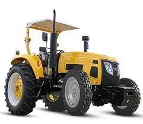
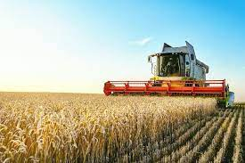
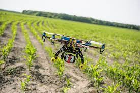
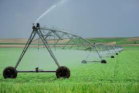

Introduction
Farming has undergone a remarkable transformation with the advent of mechanized tools. These advanced technologies have revolutionized traditional farming methods, significantly enhancing efficiency and productivity. This blog explores the key mechanized tools that have become indispensable in modern agriculture.
Tractors
Tractors are the workhorses of modern agriculture, providing farmers with the power to plow, plant,cultivate, and harvest at an unprecedented scale. Equipped with GPS navigation and advanced control systems, tractors have become essential for precision farming, optimizing field operations and resource utilization.
Harvesters
Harvesters have revolutionized the process of crop harvesting. These specialized machines can efficiently cut, thresh, and clean crops, significantly reducing the labor required for these tasks. Modern harvesters are equipped with advanced technologies to ensure minimal crop damage and maximum yield.
Drones
Unmanned aerial vehicles, or drones, have found applications in agriculture for crop monitoring and management. Drones equipped with high-resolution cameras and sensors can provide real-time data on crop health, allowing farmers to identify issues such as diseases, pests, or nutrient deficiencies. This technology enables targeted interventions and resource optimization.
Automated Irrigation Systems
Mechanized irrigation systems, such as drip irrigation and sprinklers, have transformed the way farmers water their crops. These systems ensure precise and efficient water distribution, reducing water wastage and promoting sustainable water management practices.
Robotic Systems
Robotic systems are increasingly being used for various tasks in agriculture. From robotic weeders that can identify and remove unwanted plants to autonomous vehicles for planting and harvesting, robotics is enhancing efficiency and reducing the reliance on manual labor.
IoT in Agriculture
The Internet of Things (IoT) is playing a crucial role in modern farming. Connected devices and sensors collect data on various aspects of farming, including soil moisture, temperature, and crop health. This data-driven approach enables farmers to make informed decisions and optimize their farming practices.